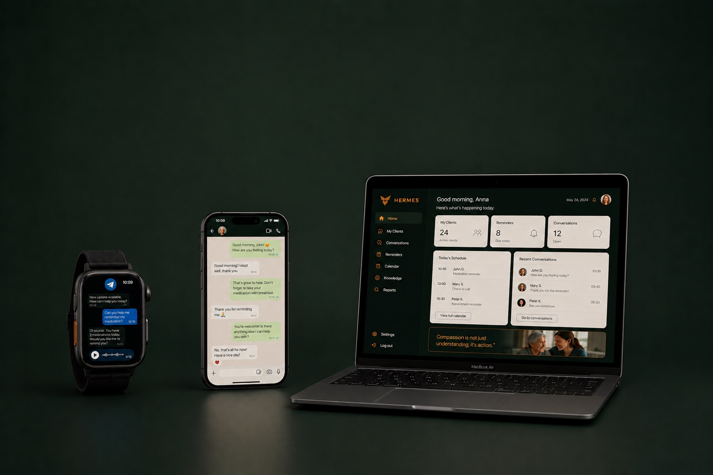

Blijvend geheugen
Onthoudt elk gesprek en doorzoekt ze.
01
Claude en ChatGPT zijn sterke modellen, maar blijven proprietary routes met terugkerende tokenkosten en afhankelijkheid van één leverancier. Hermes is een gratis, open-source AI-assistent die op je eigen machine draait, waarmee je workflows, tools en providerkeuze in eigen hand houdt en goedkoper kunt opschalen of wisselen wanneer dat nodig is.
Controle, governance en privacy zijn geen details. Ze zijn de basis. AI-agents kunnen doelbewust of onbedoeld worden misbruikt via schadelijke instructies, promptmanipulatie of aanvallen. Daarom richten we inrichting, rechten en context zo in dat de agent begrensd blijft.
ZZPagent levert advies, configuratie, automatisering en beheer van AI-agents voor zakelijke gebruikers. De dienstverlening is gericht op ondersteuning van werkprocessen, niet op het overnemen van professionele verantwoordelijkheid van de klant.
ZZPagent verwerkt persoonsgegevens en bedrijfsgegevens alleen voor zover nodig om de agent te configureren, beveiligen, uitvoeren en beheren. Gevoelige informatie mag niet onnodig in prompts, geheugen of logs terechtkomen.
Een ZZPagent mag voorbereiden, samenvatten, signaleren, ordenen en concepten klaarzetten. Juist omdat agentic AI taken kan onthouden, herhalen, uitvoeren en opschalen over systemen heen, blijft menselijke controle nodig bij gevoelige of externe acties. Automatisering mag accountability niet verminderen en processen moeten te stoppen of bij te sturen blijven nadat ze gestart zijn.
Veel ZZP’ers gebruiken ChatGPT, Claude of Perplexity voor content, e-mails, samenvattingen of offertes. Nuttig maar met een toenemend risico van vendor lock-in door de afhankelijkheid van een leverancier.
Geen losse chatbot, maar een agent die leert hoe jij werkt, terugkerende taken voorbereidt en de operationele ruis uit je dag haalt.
Van concept naar uitvoering, jij houdt de regie. Eerst laat de agent zien wat hij wil doen. Pas na feedback en vertrouwen krijgt hij meer ruimte.
Succesvolle AI is niet alleen technische vooruitgang, maar een combinatie van sterke technologie, ethiek, transparantie, menselijke controle, veiligheid, wetgeving en voortdurende evaluatie.
Daarom bouwt ZZPagent liever met kleinere, gespecialiseerde agents die taakgericht samenwerken in human-AI teams. Waar zinvol combineren ze tekst, beeld, audio en andere gegevens, maar altijd rond een concrete workflow en met mensen in de beslissende rol.
Onthoudt elk gesprek en doorzoekt ze.
Schrijft zijn eigen skills. Wordt slimmer naarmate je het gebruikt.
Handelt proactief en draait taken op schema.
Werkt waar je al werkt: Telegram, WhatsApp en Slack. Ook via de browser op je iPhone in Safari of op de Hermes app.

De eerste versie richt zich op concrete, terugkerende workflows voor ZZP’ers. Klein beginnen, bewijzen dat het werkt, daarna uitbreiden, met focus op tijdswinst, overzicht en beheersbare AI.
Uiteindelijk is het doel dat je als kenniswerker meer grip krijgt op het werk tussen oude systemen, data en nieuwe processen. Daar zit de echte waarde: AI moet je helpen de kloof te overbruggen tussen verouderde systemen en moderne, datagedreven bedrijfsvoering.
Laat mail samenvatten, urgente berichten markeren en afspraken of signalen bewaken. Hermes kan je agenda bijhouden vanuit diverse mails en kanalen, zodat losse signalen samenkomen in één rustig overzicht.
Zet je propositie om in een compacte website of landingpage met heldere tekst, passende visuals, CTA’s en een intake- of contactroute die direct bruikbaar is voor ZZP’ers.
Documenten ordenen, lijstjes bijhouden, intake vastleggen en ontbrekende informatie signaleren zonder onnodige frictie.
De vraag is niet of een organisatie ergens AI gebruikt. De vraag is of AI onderdeel wordt van een terugkerende workflow. In klantcontact, softwareontwikkeling, juridische analyse, marketing, interne kennisbanken en financiële processen ontstaat pas waarde wanneer AI meeloopt in het werk zelf, met duidelijke grenzen en menselijke verantwoordelijkheid.
Met een AI-workflow bedoel ik: een terugkerend bedrijfsproces waarin AI informatie leest, samenvat, routeert of controleert, gekoppeld aan bestaande systemen. Dus niet alleen een losse prompt in ChatGPT, maar een medewerker die tijdens het werk relevante klantinformatie, productsuggesties en conceptantwoorden krijgt. De mens beslist wat er naar buiten gaat.
Artikelen, posts, klantupdates en interne notities in een herkenbare toon en vaste structuur.
Zoek leads, beoordeel relevantie en bereid persoonlijke outreach of opvolging voor zonder handmatig speurwerk.
Werk vergader- en gespreksopnames uit, vat ze samen en verdeel inzichten, acties of thema’s per persoon, onderwerp of opvolging.
Hermes is sterk in context, redeneren en samenwerking met mensen. Hermes kan zelf tools en koppelingen aansturen. Voor processen die strak, herhaalbaar of goed controleerbaar moeten zijn, koppelen we Hermes bijvoorbeeld aan n8n als workflowlaag. Zo kan je agent samenwerken met mail, agenda, spreadsheets, formulieren, CRM, betalingen en interne tools, terwijl n8n de vaste stappen voorspelbaar uitvoert. Bestaat er een standaardkoppeling, dan gebruiken we die. Anders kiezen we voor API, webhook of een veilige handmatige route.
Laat mail samenvatten, urgente berichten markeren, reminders klaarzetten en Teams- of agenda-updates doorgeven zonder dat de agent zomaar namens jou verstuurt. We beginnen bij voorkeur met één mailbox, label of afgebakende leesroute, niet met toegang tot alles.
Gebruik Sheets, Excel, Drive of OneDrive als praktische bron voor overzichten, rapportages, intakebestanden en documentverwerking.
Nieuwe aanvragen kunnen automatisch naar je CRM, spreadsheet of mailbox, met een korte samenvatting en voorgestelde opvolging.
Formulieren, webhooks en Mollie kunnen intake, betaalstatus en activatie gescheiden houden.
Voor AI-flows koppelen we n8n aan modellen, documenten, vector databases en tools. De agent maakt samenvattingen, concepten of acties klaar.
Heeft je software een API, database of webhook? Dan kunnen we vaak koppelen zonder dat je hoeft te migreren naar een ander platform.
Hermes kan samenwerken met deterministische workflow-tools zoals n8n: de agent denkt, de workflow voert uit. Dat maakt routinetaken betrouwbaarder, voorspelbaarder en goedkoper — terwijl Hermes zich richt op waar echt inzicht nodig is.
Hermes hoeft niet vast te zitten aan één platform of leverancier. Je kunt Hermes draaien op een VPS, op je eigen Mac mini of in een hybride opstelling. ZZPagent helpt je vooral de route kiezen die past bij je werk, privacywensen, bereikbaarheid en budget.
Voor zelfstandigen die een altijd bereikbare agent willen zonder eigen hardware thuis of op kantoor. Denk aan een VPS bij bijvoorbeeld Hetzner, Hostinger of een andere Europese provider.
Voor zelfstandigen die maximale controle willen over data, toegang en lokale bestanden. Dit past goed bij lokaal werken, gevoelige documenten of een kantooromgeving waarin je zelf de toegang wilt beheren.
Soms is een hybride inrichting logisch: Hermes draait deels lokaal voor gevoelige context en gebruikt een VPS of cloudroute voor bereikbaarheid, geplande taken of externe koppelingen.
Gebruik ChatGPT/Codex via OAuth, gebaseerd op je maandelijkse abonnement én commodity modellen via OpenRouter. Als een route zijn limiet bereikt, schakelt de agent over naar een vooraf gekozen alternatief. Hermes beschikt over MOA (Mix of Agents) waar je de modellen per taak kunt alloceren.
Je logt in met ChatGPT/Codex of gebruikt OpenRouter als modelhub. Daarna kiest de agent per taak de ingestelde route en fallback.
Voor klanten die via ChatGPT of Codex willen werken zonder losse API-key. Je logt eenmalig in; daarna gebruikt de agent een beveiligde OAuth-koppeling als primaire route.
Voor klanten die via Claude willen werken zonder losse API-key. Anthropic staat OAuth toe, maar de beschikbare capaciteit is beperkt — de yield is laag en limieten kunnen snel bereikt zijn.
OpenRouter geeft via één sleutel toegang tot modellen zoals Claude, GPT, DeepSeek en GLM. Handig voor fallback, prijsbewuste routering en het kiezen van een ander model zodra dat beter past.
Bij deze modelprijzen tonen we twee bedragen per 1M tokens: input voor je prompt naar het model en output voor het antwoord terug. Bij deze modellen is output meestal duurder dan input.
Naam, e-mailadres en bedrijfsnaam voor de eerste intake.
We bereiden je Hermes-agent voor op de eerste workflow.
Maak je bot aan via BotFather en plak de token in het formulier. Nederlandse uitleg.
Geen code nodig: we loggen samen in via de officiële ChatGPT-login.
Na je intake ga je veilig naar Mollie. Na betaling zetten we je installatie klaar.
Geen grote startkosten en direct opzegbaar.
Vul de gegevens in die nodig zijn om Hermes voor jouw eerste workflow voor te bereiden. Daarna ga je veilig naar Mollie; installatie volgt na betaling.